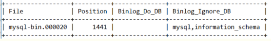
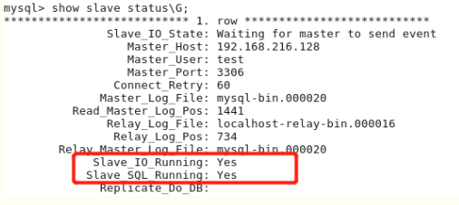
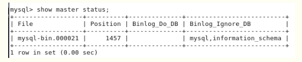
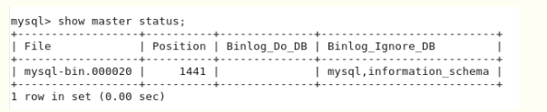

datetime:2019/9/5 10:01
author:nzb
MySQL的主从复制
主从复制
两台数据库服务器(Linux服务器), IP分别为192.168.1.110和192.168.1.111,服务器上装上MySQL(版本为5.7)
打开主数据库配置文件：vim /etc/mysql/my.cnf, 加入以下内容后重启MySQL服务
[mysqld] log-bin=mysql-bin server-id=1 （默认为1，总之两台服务器要设置为不同的ID）打开从数据库配置文件：vim /etc/mysql/my.cnf, 加入相同内容后将其中的 server-id 设为2（默认为1）然后重启MySQL服务
设192.168.1.110为主数据库, 在数据库中加入一个从服务器可以登录的用户, 语句如下：
GRANT ALL PRIVILEGES ON *.* TO 'user'@'192.168.1.111' IDENTIFIED BY 'password' WITH GRANT OPTION;(或 GRANT REPLICATION SLAVE ON *.* TO 'username'@'192.168.1.111' IDENTIFIED BY 'password' WITH GRANT OPTION;) FLUSH PRIVILEGES;完成后, 在192.168.1.111服务器上执行：mysql -h 192.168.1.110 -u用户名 -p密码, 查看连接是否成功
最后在主数据库中执行以下语句, 查询master状态：show master status;  可以看到以上结果，这儿只需要看 File 和 Position，其它的两个分别是白名单和黑名单，意思为同步哪几个数据库和不同步哪几个数据库，可自行根据需求进行设置。记录了前两个字段后，在从库上执行以下语句：
CHANGE MASTER TO MASTER_HOST='192.168.1.110', MASTER_USER='user', MASTER_PASSWORD='password', MASTER_PORT='3306', MASTER_LOG_FILE='mysql-bin.000020', MASTER_LOG_POS=1441;执行完成后, 在从数据库上继续执行以下语句：
start slava; show slave status\G;这样，查看从服务器的状态，如果状态中的用红线标出来两个参数的值都为YES，那证明配置已经成功，否则可以检查一下具体问题出现在什么地方。 
这样，就算配置完成了。在主库中新建数据库，新建一张表，插几条数据，到从库上查询一下看是否已经同步过来。
PS:如果失败，可以从以下几个方面去排查问题：
1.首先试一下主从服务器相互之间是否 PING 得通
2.试一下远程连接是否正确，如果连不上，则有可能是网卡不一致、防火墙没有放行 3306 端口
3.server-id 是否配成一致
4.bin-log 的信息是否正确
主主复制
上面说了主从复制的配置方法，现在接着上面的配置继续，然后实现双主复制，让以上的两个服务器互为主从。
在主服务器上配置 /etc/mysql/my.cnf 文件，配置如下,配置之后重启MYSQL服务:
auto_increment_increment=2 #步进值auto_imcrement。一般有n台主MySQL就填n auto_increment_offset=1 #起始值。一般填第n台主MySQL。此时为第一台主MySQL binlog-ignore=mysql #忽略mysql库【一般都不写】 binlog-ignore=information_schema #忽略information_schema库【一般都不写】在从服务器上配置 /etc/mysql/my.cnf 文件，配置如下, 配置之后重启MYSQL服务:
auto_increment_increment=2 #步进值auto_imcrement。一般有n台主MySQL就填n auto_increment_offset=2 #起始值。一般填第n台主MySQL。此时为第二台主MySQL binlog-ignore=mysql #忽略mysql库【一般都不写】 binlog-ignore=information_schema #忽略information_schema库【一般都不写】在从服务器上添加一个主服务器可以访问的用户，命令如下：
GRANT REPLICATION SLAVE ON *.* TO 'user'@'192.168.1.110' IDENTIFIED BY 'password' with grant option ; FLUSH PRIVILEGES建好之后在192.168.1.110服务器上访问从数据库, 测试是否成功，如果可以连上，则进行下一步，连不上的话，参考上面进行问题排查。
因为要互为主从，所以现在从服务器也是master ，所以也要查看一下状态：show master status; 
查到相应的信息后，在原来的主服务器上执行以下命令（因为现在它现在也是另一台的从服务器）
CHANGE MASTER TO MASTER_HOST='192.168.1.111', MASTER_USER='user', MASTER_PASSWORD='password', MASTER_LOG_FILE='mysql-bin.000021', MASTER_LOG_POS=1457;执行完毕后，在原主库上继续执行如下语句：
start slave; show slave status\G;同上，如果出现如下画面，则证明配置成功。
在两台服务器的MYSQL中分别进行一些建库、建表、插入、更新等操作，看一下另一台会不会进行同步，如果可以则证明主主配置成功，否则还是上面的排错方法，进行错误排查。
双主多从
现在已经是双主配置了，但是如果要进行读写分离，那么我们要再增加N台从库，如何做呢？非常简单，按如下操作即可：
新增加一台数据库服务器，192.168.1.112，数据库配置均与前两台相同
确定一下要将哪一台当作自己的主服务器，我们姑且设 192.168.1.110 为主服务器
在第三台服务器中编辑 /etc/mysql/my.cnf ，将其 server-id 设为 3（保证与前两个不一样即可），然后重启MYSQL服务
在主服务器中，增加一条用户记录，用于当前服务器对主库对的连接，代码如下：
GRANT REPLICATION SLAVE ON *.* TO 'user'@'192.168.1.112' IDENTIFIED BY 'password'; FLUSH PRIVILEGES;在 192.168.216.130 服务器上测试是否可以连接到主库:
mysql -h 192.168.1.110 -u用户名 -p密码, 如果可以连上，则可以进行下一步，否则根据上面的提示排查问题。在 192.168.216.130 服务器上查询 master 当前状态: show master status; 
看到相关信息后，我们执行如下操作：
CHANGE MASTER TO MASTER_HOST='192.168.1.110', MASTER_USER='user', MASTER_PASSWORD='password', MASTER_LOG_FILE='mysql-bin.000020', MASTER_LOG_POS=1441;执行完毕后，在原主库上继续执行如下语句：
start slave; show slave status\G;同上，如果出现如下画面，则证明配置成功。如果此处有问题，参考上面所提排查并解决问题。
此时我们在 192.168.1.110 上建库、建表、插入、更新、删除数据，在 另外两台上分别进行查看，发现均已经同步。 但是如果我们在 192.168.1.111 上做相应的操作，则发现只有 192.168.1.110 上进行了相应的同步，而 192.168.1.112 上的数据并未同步。 这是为什么呢？因为我们设置的主库是 192.168.1.110，所以在 192.168.1.111 进行数据操作的时候并未同步，这显然不符合我们的需求， 那么，我们要怎么修改呢？非常简单，在互为主从的两台服务器的配置文件中均加入以下语句：
log-slave-updates=on加上后将两台服务器的MYSQL重启，然后再进行测试，发现数据已经可以同步了。如果要再多加一些从服务器，和以上类似，现在我们做的是双主一从，我们可以再加N台从服务器，配置也是一样的。
至此，MYSQL主从复制、主主复制、双主多从配置我们均已经搞定！
Docker配置MySQL主从复制
下面还是基于Docker来演示如何配置MySQL主从复制。我们事先准备好MySQL的配置文件以及保存MySQL数据和运行日志的目录，然后通过Docker的数据卷映射来指定容器的配置、数据和日志文件的位置。
root
└── mysql
├── master
│ ├── conf
| └── data
└── slave-1
| ├── conf
| └── data
└── slave-2
| ├── conf
| └── data
└── slave-3
├── conf
└── data
MySQL的配置文件（master和slave的配置文件需要不同的server-id）。
[mysqld] pid-file=/var/run/mysqld/mysqld.pid socket=/var/run/mysqld/mysqld.sock datadir=/var/lib/mysql log-error=/var/log/mysql/error.log server-id=1 log-bin=/var/log/mysql/mysql-bin.log expire_logs_days=30 max_binlog_size=256M symbolic-links=0 # slow_query_log=ON # slow_query_log_file=/var/log/mysql/slow.log # long_query_time=1创建和配置master。
docker run -d -p 3306:3306 --name mysql-master \ -v /root/mysql/master/conf:/etc/mysql/mysql.conf.d \ -v /root/mysql/master/data:/var/lib/mysql \ -e MYSQL_ROOT_PASSWORD=123456 mysql:5.7 docker exec -it mysql-master /bin/bashmysql -u root -p Enter password: Welcome to the MySQL monitor. Commands end with ; or \g. Your MySQL connection id is 1 Server version: 5.7.23-log MySQL Community Server (GPL) Copyright (c) 2000, 2018, Oracle and/or its affiliates. All rights reserved. Oracle is a registered trademark of Oracle Corporation and/or its affiliates. Other names may be trademarks of their respective owners. Type 'help;' or '\h' for help. Type '\c' to clear the current input statement. mysql> grant replication slave on *.* to 'slave'@'%' identified by 'iamslave'; Query OK, 0 rows affected, 1 warning (0.00 sec) mysql> flush privileges; Query OK, 0 rows affected (0.00 sec) mysql> show master status; +------------------+----------+--------------+------------------+-------------------+ | File | Position | Binlog_Do_DB | Binlog_Ignore_DB | Executed_Gtid_Set | +------------------+----------+--------------+------------------+-------------------+ | mysql-bin.000003 | 590 | | | | +------------------+----------+--------------+------------------+-------------------+ 1 row in set (0.00 sec) mysql> quit Bye exit上面创建Docker容器时使用的
-v参数（--volume）表示映射数据卷，冒号前是宿主机的目录，冒号后是容器中的目录，这样相当于将宿主机中的目录挂载到了容器中。创建和配置slave。
docker run -d -p 3308:3306 --name mysql-slave-1 \ -v /root/mysql/slave-1/conf:/etc/mysql/mysql.conf.d \ -v /root/mysql/slave-1/data:/var/lib/mysql \ -e MYSQL_ROOT_PASSWORD=123456 \ --link mysql-master:mysql-master mysql:5.7 docker run -d -p 3309:3306 --name mysql-slave-2 \ -v /root/mysql/slave-2/conf:/etc/mysql/mysql.conf.d \ -v /root/mysql/slave-2/data:/var/lib/mysql \ -e MYSQL_ROOT_PASSWORD=123456 \ --link mysql-master:mysql-master mysql:5.7 docker run -d -p 3310:3306 --name mysql-slave-3 \ -v /root/mysql/slave-3/conf:/etc/mysql/mysql.conf.d \ -v /root/mysql/slave-3/data:/var/lib/mysql \ -e MYSQL_ROOT_PASSWORD=123456 \ --link mysql-master:mysql-master mysql:5.7 docker exec -it mysql-slave-1 /bin/bashmysql -u root -p Enter password: Welcome to the MySQL monitor. Commands end with ; or \g. Your MySQL connection id is 2 Server version: 5.7.23-log MySQL Community Server (GPL) Copyright (c) 2000, 2018, Oracle and/or its affiliates. All rights reserved. Oracle is a registered trademark of Oracle Corporation and/or its affiliates. Other names may be trademarks of their respective owners. Type 'help;' or '\h' for help. Type '\c' to clear the current input statement. mysql> reset slave; Query OK, 0 rows affected (0.02 sec) mysql> change master to master_host='mysql-master', master_user='slave', master_password='iamslave', master_log_file='mysql-bin.000003', master_log_pos=590; Query OK, 0 rows affected, 2 warnings (0.03 sec) mysql> start slave; Query OK, 0 rows affected (0.01 sec) mysql> show slave status\G *************************** 1. row *************************** Slave_IO_State: Waiting for master to send event Master_Host: mysql57 Master_User: slave Master_Port: 3306 Connect_Retry: 60 Master_Log_File: mysql-bin.000001 Read_Master_Log_Pos: 590 Relay_Log_File: f352f05eb9d0-relay-bin.000002 Relay_Log_Pos: 320 Relay_Master_Log_File: mysql-bin.000001 Slave_IO_Running: Yes Slave_SQL_Running: Yes Replicate_Do_DB: Replicate_Ignore_DB: Replicate_Do_Table: Replicate_Ignore_Table: Replicate_Wild_Do_Table: Replicate_Wild_Ignore_Table: Last_Errno: 0 Last_Error: Skip_Counter: 0 Exec_Master_Log_Pos: 590 Relay_Log_Space: 534 Until_Condition: None Until_Log_File: Until_Log_Pos: 0 Master_SSL_Allowed: No Master_SSL_CA_File: Master_SSL_CA_Path: Master_SSL_Cert: Master_SSL_Cipher: Master_SSL_Key: Seconds_Behind_Master: 0 Master_SSL_Verify_Server_Cert: No Last_IO_Errno: 0 Last_IO_Error: Last_SQL_Errno: 0 Last_SQL_Error: Replicate_Ignore_Server_Ids: Master_Server_Id: 1 Master_UUID: 30c38043-ada1-11e8-8fa1-0242ac110002 Master_Info_File: /var/lib/mysql/master.info SQL_Delay: 0 SQL_Remaining_Delay: NULL Slave_SQL_Running_State: Slave has read all relay log; waiting for more updates Master_Retry_Count: 86400 Master_Bind: Last_IO_Error_Timestamp: Last_SQL_Error_Timestamp: Master_SSL_Crl: Master_SSL_Crlpath: Retrieved_Gtid_Set: Executed_Gtid_Set: Auto_Position: 0 Replicate_Rewrite_DB: Channel_Name: Master_TLS_Version: 1 row in set (0.00 sec) mysql> quit Bye exit接下来可以如法炮制配置出slave2和slave3，这样就可以搭建起一个“一主带三从”的主从复制环境。上面创建创建容器时使用的
--link参数用来配置容器在网络上的主机名（网络地址别名）。
配置好主从复制后，写数据的操作应该master上执行，而读数据的操作应该在slave上完成。为此，在Django项目中需要配置DATABASE_ROUTERS并通过自定义的主从复制路由类来实现读写分离操作，如下所示：
DATABASE_ROUTERS = [
# 此处省略其他配置
'common.routers.MasterSlaveRouter',
]
class MasterSlaveRouter(object):
"""主从复制路由"""
@staticmethod
def db_for_read(model, **hints):
"""
Attempts to read auth models go to auth_db.
"""
return random.choice(('slave1', 'slave2', 'slave3'))
@staticmethod
def db_for_write(model, **hints):
"""
Attempts to write auth models go to auth_db.
"""
return 'default'
@staticmethod
def allow_relation(obj1, obj2, **hints):
"""
Allow relations if a model in the auth app is involved.
"""
return None
@staticmethod
def allow_migrate(db, app_label, model_name=None, **hints):
"""
Make sure the auth app only appears in the 'auth_db'
database.
"""
return True
上面的内容参考了Django官方文档的DATABASE_ROUTERS配置，对代码进行了适当的调整。